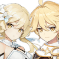

Geo
Albedo
One of the creations of the alchemist Rhinedottir, the mysterious Albedo is the Chief Alchemist and Captain of the Investigation Team of the Knights of Favonius. Through a recommendation from the adventurer Alice, with Sucrose as his assistant, he holds an infinite desire to learn about the world of Teyvat, carefully studying every object around him.

Ningguang
She is the Tianquan of the Liyue Qixing and owns the floating Jade Chamber in the skies of Liyue.⠀⠀⠀⠀⠀⠀⠀⠀⠀⠀


Noelle
While not yet a knight, she seeks to one day join the Knights of Favonius by first serving as a dutiful maid.⠀⠀⠀⠀⠀⠀⠀⠀⠀⠀

Traveler
At the beginning of the game, both genders are twin siblings from another world, traveling throughout the universe, until an unknown god blocked and captured one of them, and sealed their power to travel, leaving them stranded on Teyvat. They are accompanied by a travel companion named Paimon throughout their journey.
Zhongli
He first appears in the Archon Quests Chapter I: Act II - Farewell, the Archaic Lord. He is later revealed to be the current vessel of the Geo Archon, Morax, who has decided to experience the world from the perspective of a mortal. After giving up his Gnosis, he retires from his position as an Archon and returns to his former identity as an Adeptus, although still under the guise of being a human. He currently works as a consultant of the Wangsheng Funeral Parlor.